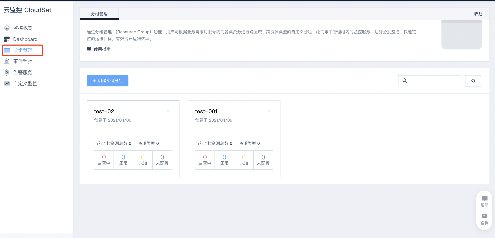
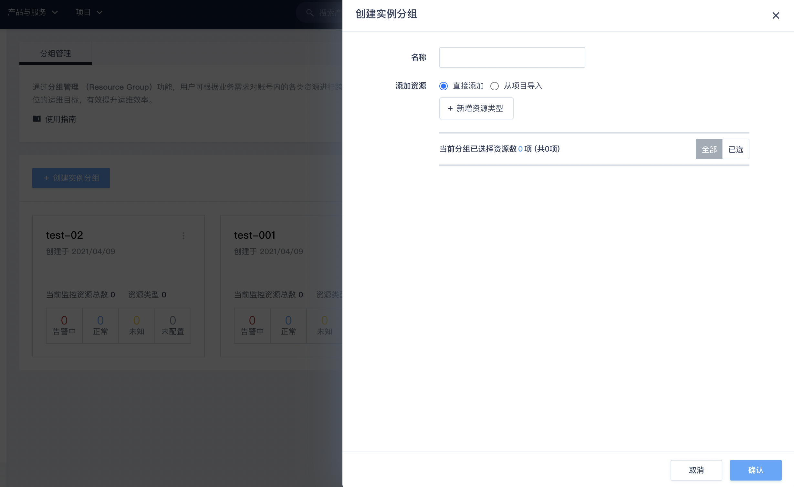
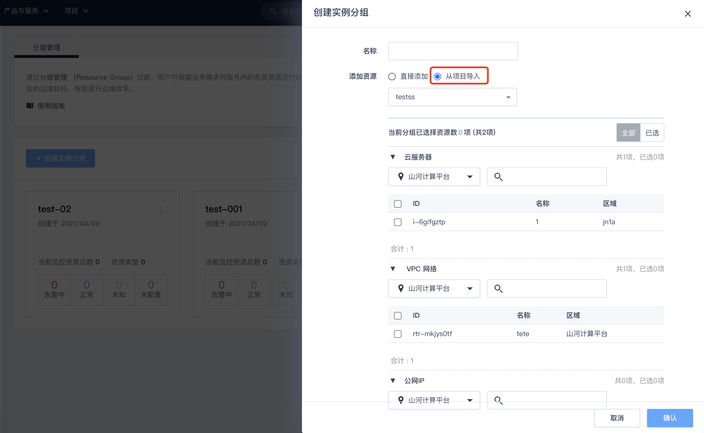
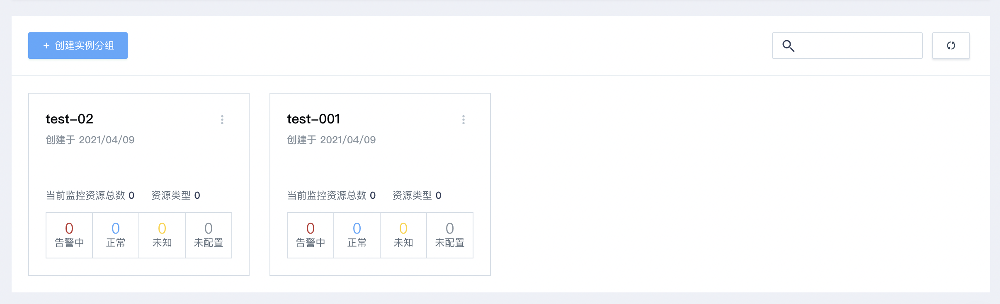
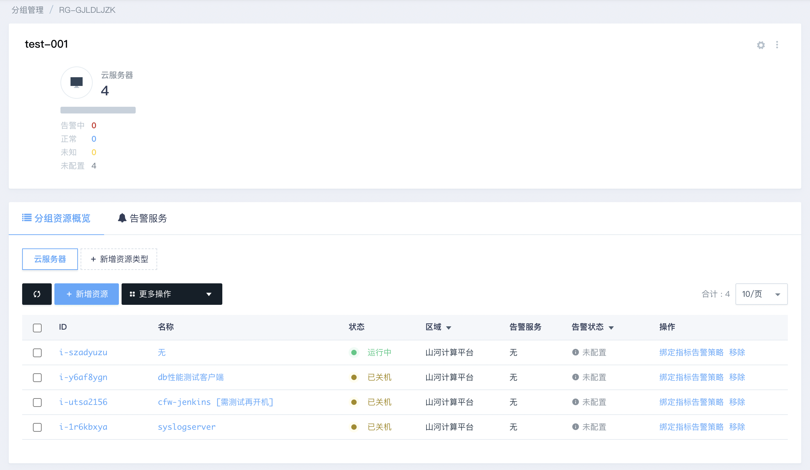
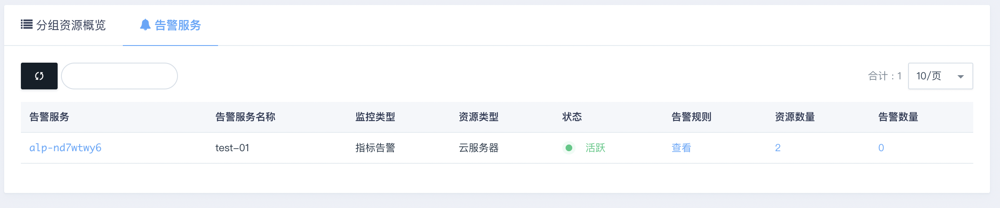

分组管理
用户可根据业务需求对账号内的各类资源进行跨区域、跨资源类型的自定义分组，继而集中管理组内的监控服务，达到分批监控、快速定位的运维目标，有效提升运维效率。
创建实例分组：
首先我们需要创建一个实例分组，指定实例分组名称，添加资源类型等。之后可以根据选择资源类型关联相应资源，开始监控。下面以云服务器资源类型为例，介绍创建的步骤。
在控制台导航中点击『云监控CloudSat』进入，左侧菜单栏选择『分组管理』进入分组管理页面，然后点击『创建实例分组』开始创建。 
参数设置
参数设置可输入名称，添加资源，选择资源类型。 其中添加资源可以选择直接添加或从项目导入，添加资源方式决定了下面添加资源类型及对应资源类型的关联不同资源项，不同的资源类型支持不同的监控项 ， 在指定了资源类型后，这个资源类型只能关联相应资源。 如下图我们选『直接添加』方式，新增资源类型『云服务器』。
为了与云平台现有的资源分组功能进行互通共用，支持直接从已有的项目内直接批量导入资源。如下图所示 
关联资源
可以对参数设置中的资源类型添加关联资源，确认即可成功创建实例分组。
查看实例监控
分组管理可以对自定义实例分组进行集中管理。包括分组总体概览、分组资源概览、告警服务等。
- 实例分组概览
实例分组概览主要展示该实例分组的组名、资源类型、配置资源数、监控资源状态（告警中、正常、未知、未配置）统计等。也可以对该实例分组进行修改或删除操作。
可对分组内的实例资源进增删改的操作，保证分组的最终运维效果最佳。
- 分组资源概览
分组资源概览主要用于实例组绑定的相关资源的监控，分组资源概览详情页可以看到已关联资源的列表。每一条关联资源记录信息包括资源ID、名称、状态、区域、告警服务、操作等，也可以在该页面增加删除实例组资源，绑定移除指标告警策略等。
- 告警服务
在分组详情页面内，可统一查看某一个分组内的所有资源的告警信息，包括告警资源服务名称、监控类型、资源类型、状态、告警规则、资源数量、告警数量等。  如需查询正在告警的具体资源，点击「告警数量」列内的红色数字，即可为用户精准定位到告警中的资源。用户可针对告警的异常资源进行进一步的异常排查工作。